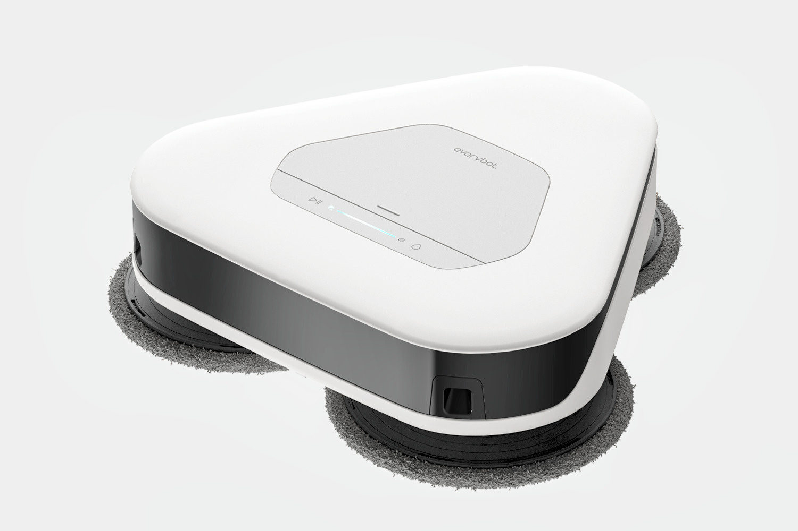
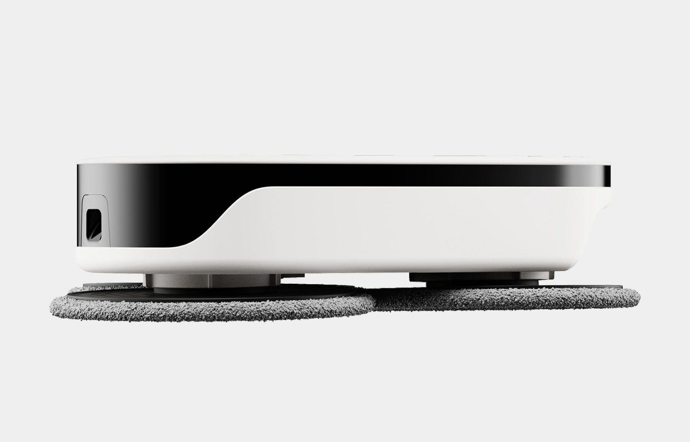
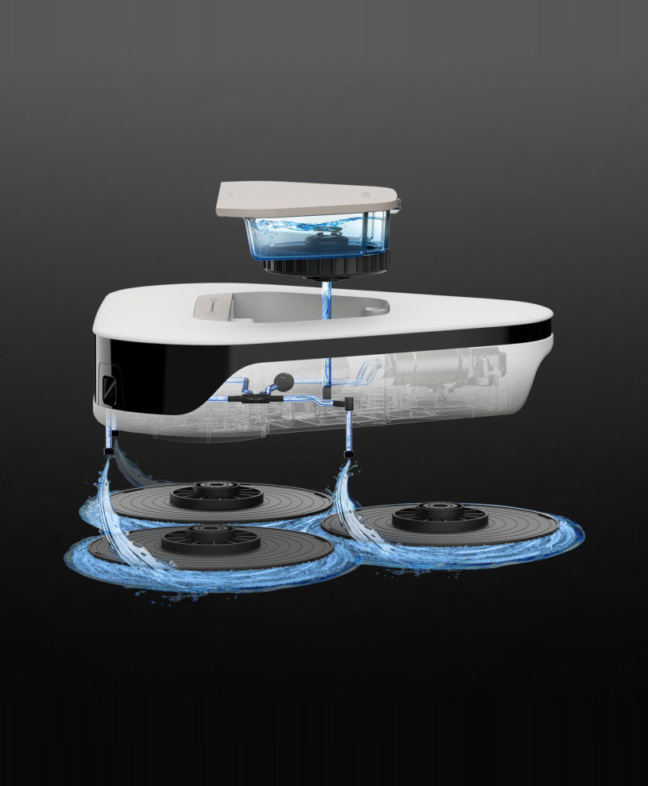

Threespin Slim
에브리봇이 10년 이상 축적한 ROBO-SPIN 기술을 바탕으로 브랜드 역사상 가장 슬림하게 완성한 물걸레 로봇청소기입니다. 낮은 바디로 소파·침대 아래까지 청소 범위를 넓히고, 오프 화이트 매트 마감과 심리스한 곡면으로 거실의 오브제처럼 자리하도록 디자인했습니다.

 2026.04iF Design Award 2026 · Gold
2026.04iF Design Award 2026 · Gold 2026.04Red Dot Design Award · Winner
2026.04Red Dot Design Award · Winner 2026.09Good Design (GD) · 선정
2026.09Good Design (GD) · 선정공간에 스며드는 미니멀 오브제
낮은 높이와 단순한 형태, 끊김 없는 곡면으로 가전보다 오브제에 가까운 인상을 만들었습니다.

낮음 · 단순함 · 심리스
세 가지 조형 원칙 아래 형태를 정리했습니다.
Triangle Form
ROBO-SPIN 구조의 세 회전 패드 배치가 그대로 삼각형 외형으로 이어졌습니다. 다양한 R값으로 모서리를 다듬어 원형 로봇청소기와 다른 조형 언어를 만들었고, 본체를 360도로 두르는 블랙 센서창 라인이 시선을 가로로 이끕니다. 센서가 없는 양옆은 하이글로시 블랙 파트로 이어 끊김 없는 띠로 보이게 했습니다.
Low Proportion
상단부 두께를 최소화하고 측면 라인이 바닥으로 흘러내리도록 처리해 바닥에 밀착된 인상을 줍니다. 개발 중 IR 센서가 측후면으로 이동한 뒤에도 손잡이·상면 곡률·센서창 비율을 함께 조정해 이 라인을 유지했습니다.


센서창 스크래치 VOC를 바디 형상으로 해결
이전 모델에서 접수된 센서창·가구 스크래치 VOC를 바디 형상으로 해결했습니다.
센서창 보호 단차
이전 모델은 센서창이 바디와 같은 면에 있어 가구에 직접 부딪혔고, 센서창과 가구에 스크래치가 생겼습니다. 상·하단 바디를 센서창보다 바깥으로 내밀어 단차를 주어 부딪혀도 바디가 먼저 닿게 했습니다.
크래들 비접촉 거치
크래들에 거치할 때도 센서창이 크래들에 직접 닿는 면을 없애 스크래치를 막았습니다.


구동 바퀴 없이 세 개의 회전 패드만으로 이동과 청소를 동시에 수행합니다. 본체 무게가 세 패드에 실려 바닥을 눌러 닦습니다.
ROBO-SPIN
구동 바퀴 없이 세 개의 회전 패드로 이동과 청소를 동시에 수행합니다.
Simple UI
시작·정지와 물 공급량 버튼 2개, 작동 상태를 알리는 라이트 라인, 음성 안내만으로 매뉴얼 없이 조작합니다.
Mop Pads
세 개의 회전 패드는 손쉽게 탈착·세탁할 수 있고, 세탁 후 반복 사용합니다.


본체를 세워 결합하는 수직형 거치대로 보관 면적을 줄였습니다. 거치대도 본체와 같은 곡면·컬러·마감으로 통일해 보관 중에도 하나의 오브제로 읽힙니다.
도장 없이 착색 레진으로 사출해 색과 표면을 완성하는 원착(무도장) 사출로 마감했습니다.


1:1 목업과 샘플로 비율·센서창 라인·CMF를 확인하고, 기구설계팀과 구조를 함께 검토했습니다.